Bài 9: Tạo Danh Sách và Bảng
1. Tạo Danh Sách
a. Danh sách có hoặc không có thứ tự
Mục hiển thị tuần tự, kí tự đầu dòng có thể là một số, chữ, dấu, kí hiệu hoặc hình ảnh.
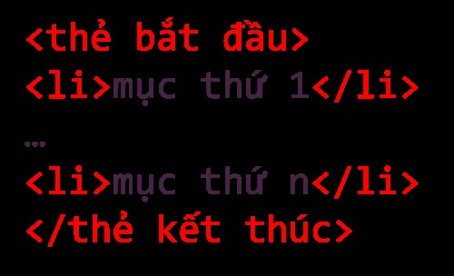Danh sách có thứ tự
Sử dụng cặp thẻ <ol></ol> để chọn kiểu đánh
thứ tự và giá trị bắt đầu. Sử dụng hai thuộc tính sau:
- type: xác định kiểu đánh số. Các kiểu đánh số: "1", "A", "a", "I" và "i".
- start: xác định kiểu giá trị bắt đầu đánh số, nhận giá trị là các số thực.
Danh sách không có thứ tự
Sử dụng cặp thẻ <ul></ul> để chọn kiểu đánh
không thứ tự và giá trị bắt đầu. Sử dụng hai thuộc tính
style với giá trị của đặc tính
list-style-type, các giá trị đi kèm là disc,
circle, square và none.

b. Danh sách mô tả
Dùng để liệt kê các mục kèm theo mô tả từng mục.
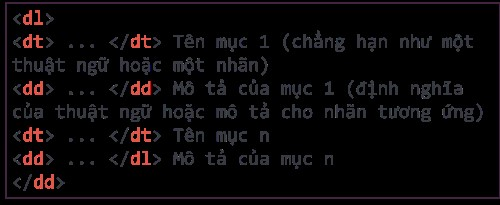
2. Thiết lập Bảng
Bảng tạo từ các hàng, mỗi hàng gồm các ô dữ liệu. Hàng đầu tiên là hàng tiêu đề của bảng.
Các thành phần:
<table>- tạo bảng<tr>- tạo hàng<td>- tạo các ô dữ liệu<th>- tạo ô tiêu đề
Sử dụng thẻ cấu trúc
<caption>Tiêu_đề</caption> ngay sau thẻ
<table> và trước thẻ <tr> để
thêm tiêu đề cho bảng.
Sử dụng cấu trúc thuộc tínhborder:độ_dày_theo_px kiểu_viền [màu_viền]
để tạo khung cho bảng.
Sử dụng thuộc tính rowspan (cho hàng) hoặc
colspan (cho cột) để gộp ô.
Bài 10: Tạo Liên Kết
1. Siêu văn bản và đường dẫn
Siêu văn bản (hypertext) là loại văn bản mà nội dung của nó chứa nhiều dạng dữ liệu khác như âm thanh, hình ảnh,... và đặc biệt là chứa các siêu liên kết (hyperlink) tới siêu văn bản khác.
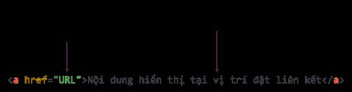Xem nội dung thông qua truy cập vị trí tương ứng bằng các siêu liên kết không theo trình tự nào.
Siêu liên kết (còn gọi tắt là liên kết), là một tham chiếu để liên kết tới siêu văn bản khác. Người dùng có thể dễ dàng truy cập đến văn bản liên kết bằng cách nháy chuột vào vị trí đặt liên kết trong văn bản ban đầu.
Cấu trúc thẻ <a>
-
Đường dẫn tuyệt đối: Cung cấp đầy đủ cả giao thức
(
http://hoặchttps://), tên miền, tên đường dẫn chi tiết nếu cần. - Đường dẫn tương đối: Mô tả cách truy cập tài liệu được liên kết từ vị trí của tài liệu hiện tại.
2. Các cách liên kết tới một trang web
a. Liên kết tới một trang web khác
Để đặt liên kết tới mục Sách điện tử của bộ sách Kết nối tri thức với cuộc sống trên website của Nhà xuất bản Giáo dục Việt Nam trên trang web của mình, em sử dụng đoạn mã:
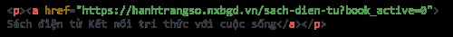Kết quả có được là đoạn văn bản đã được liên kết đến trang web Example. Khi nháy chuột vào liên kết, trình duyệt sẽ hiển thị nội dung trang web.
b. Liên kết đến một vị trí khác trong cùng website
Trong lập trình web, phần lớn các liên kết được sử dụng là liên kết trỏ tới các trang trong website của mình.
Ví dụ, từ trang chủ đi tới các trang nội dung chi tiết. Trường hợp này gọi là liên kết trong. Ta sử dụng đường dẫn tương đối cho thuộc tính href. Khi đường dẫn không có giao thức ở đầu (http:// hoặc https://), trình duyệt kiểm tra địa chỉ đó trên máy chủ hiện tại để tìm tài liệu và liên kết. Tên đường dẫn được sử dụng để xác định tập được liên kết.
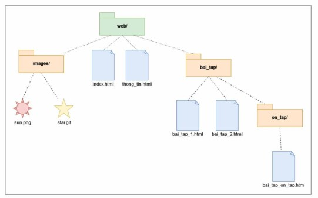Sau đây là một số trường hợp liên kết trong website có thể xảy ra.
🔷 Liên kết tới trang web cùng thư mục
Để liên kết tới một tệp trong cùng thư mục:
Để liên kết tới một tệp trong cùng thư mục, ta chỉ cần cung cấp tên của tập liên kết tới. Ví dụ tạo liên kết từ trang index.html tới trang thong_tin.html như sau:
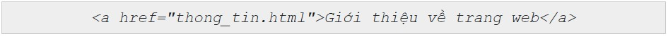🔷 Liên kết tới trang web thuộc thư mục khác, dưới một cấp
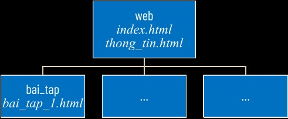Đường dẫn đến trang web khác thư mục, dưới một cấp gồm tên thư mục và tên tệp được phân cách bằng dấu “/”. Ví dụ tạo liên kết từ trang index.html tới trang bai_tap_1.html như sau:
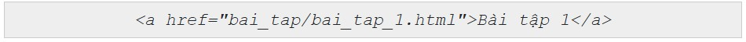🔷 Liên kết tới trang web thuộc thư mục khác, dưới hai (nhiều) cấp
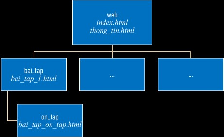Đường dẫn gồm tên các thư mục và tên tệp cần được liên kết theo thứ tự từ trên xuống. Mỗi cấp thư mục hoặc tệp tin được phân cách bởi dấu “/”. Ví dụ, tạo liên kết từ trang index.html tới trang bai_tap_on_tap.html như sau:
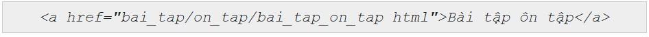Trong trường hợp trang web liên kết tới nằm ở thư mục mức trên, ta sử dụng các kí tự "../". Khi sử dụng "../" trong đường dẫn, tức là chỉ định “trở lại thư mục trên một mức” của thư mục chứa tệp có liên kết. Số cụm "../" trong đường dẫn tương ứng với số mức quay trở lại thư mục ở mức trên. Ví dụ, đoạn mã html sau chỉ dẫn địa chỉ từ trang bai_tap_1.html trong thư mục bai_tap quay lại trang index.html trong thư mục web, là thư mục mẹ của thư mục bai_tap:
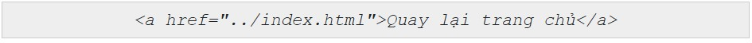🔷 Liên kết tới vị trí khác trong cùng trang web
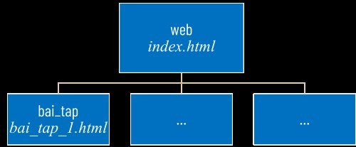Ví dụ, khi ở cuối trang muốn di chuyển lên đầu trang. Thực hiện thiết đặt như sau:
Bước 1. Tạo phần tử HTML có thuộc tính id nằm tại vị trí được liên kết đến.
Bước 2. Tạo liên kết tới phần tử trên.
Việc thiết lập thuộc tính id cho thẻ HTML tại vị trí cần liên kết giống như việc bai_tap_1.html cắm cờ trong tài liệu để có thể quay lại dễ dàng.
Để là vị trí đích, thuộc tính id cần được đặt tên duy nhất (chỉ xuất hiện duy nhất một lần trong toàn bộ trang web) và được gọi là mã định danh đoạn.
Để liên kết tới phần tử vừa tạo, ta thiết lập thuộc tính href="#mã_định_danh_đoạn".
Ví dụ, hai câu lệnh dưới đây sẽ tạo một bảng với id là Thong_tin và đặt liên kết tới bảng đó:
🔷 Liên kết cho hình ảnh
Sử dụng thẻ img để hiển thị hình ảnh.
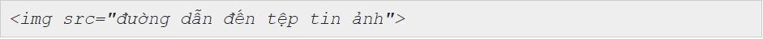Ví dụ, liên tệp có địa chỉ images/sun.png và tạo đường liên kết từ ảnh tới trang thong_tin.html thì đoạn mã có dạng như sau:
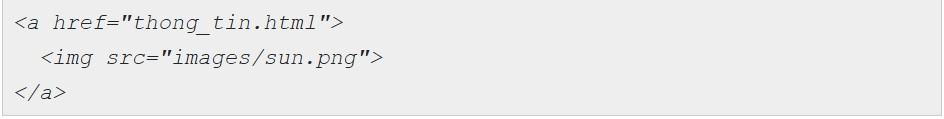Bài 11: Chèn Tệp Tin Đa Phương Tiện và Khung Nội Tuyến
1. Chèn tệp ảnh vào trang web
Sử dụng thẻ đơn <img> để chèn hình ảnh vào nội dung trang web.
Tệp ảnh hiển thị cần có định dạng phù hợp với trang web.
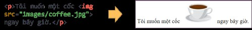Với thẻ <img>, trình duyệt sẽ phải tải ảnh lên trước khi hiển thị trên trang web. Dung lượng của tệp hình ảnh lớn sẽ làm việc hiển thị hình ảnh trên trang web gặp khó khăn nếu tốc độ của mạng chậm.
Thuộc tính src là bắt buộc, để chỉ đường dẫn tới tệp ảnh. Ngoài ra, thuộc tính alt nên được sử dụng kèm để cung cấp văn bản thay thế khi việc hiển thị ảnh bị lỗi.
<img src="đường dẫn tới tệp tin ảnh" alt="đoạn văn bản thay thế">
Nên chèn bằng đường dẫn tương đối để tránh trường hợp xảy ra lỗi khi ảnh trên mạng bị thay đổi.
🔹Ví dụ, tạo một liên kết từ ảnh pdles.png trong thư mục images tới một tệp có đường dẫn tai_lieu/bieu_mau.pdf có nội dung là biểu mẫu xin nhập học bằng đoạn mã html sau:

Sử dụng các thuộc tính điều chỉnh kích thước (tính bằng pixel) là width, height cho thẻ img. Khi sử dụng các thuộc tính này, trình duyệt sẽ giữ đúng không gian trong bố cục khi hình ảnh đang tải giúp hiển thị trang nhanh hơn. Nếu chỉ sử dụng một trong hai thuộc tính, chiều còn lại sẽ được tính toán để hiển thị theo tỉ lệ của ảnh gốc.
🔹Ví dụ, kết quả khi chèn ảnh hình cốc cafe coffee.png có chiều rộng 262 pixel, chiều dài 257 pixel với các giá trị thuộc tính khác nhau.
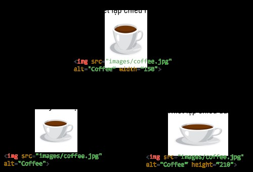2. Chèn âm thanh và video
Để chèn video hoặc âm thanh vào trang web, ta sử dụng thẻ <video> và <audio>được hỗ trợ trong hầu hết các trình duyệt, định dạng của các tập tin đa phương tiện có thể sử dụng vẫn phụ thuộc vào trình duyệt.
Hai định dạng tệp video phổ biến nhất là mp4 và webm. Định dạng mp4 chạy được trực tiếp trên hầu hết các trình duyệt.
Ba định dạng tệp âm thanh phổ biến được hỗ trợ bởi hầu hết trình duyệt hiện tại là mp3, wav và ogg.
Để chèn tệp video hay âm thanh vào trang web, ta sử dụng thẻ <video> hoặc <adio>:
<video[audio] thuộc_tính="giá_trị_thuộc_tính"></video[audio]>
controls: là thuộc tính boolean, không cần có giá trị, để trình duyệt hiển thị các thành phần điều khiển như nút phát/tạm dừng, điều khiển âm lượng,...autoplay: là thuộc tính boolean, không cần có giá trị, cho phép trình duyệt chạy video ngay khi hiển thị.poster: cung cấp đường dẫn đến tệp ảnh, dùng để hiển thị khi chưa chạy video.
Sử dụng thẻ <sources> trong cặp thẻ <video> hay <audio> để chỉ định các loại định dạng khác nhau. Trình duyệt sẽ tự động tìm và hiển thị tệp tin với định dạng mà nó hỗ trợ.
3. Tạo khung nội tuyến trong trang web
Khung nội tuyến là một khung nhìn chứa tài nguyên web khác trong trang web hiện tại.
Sử dụng thẻ <iframe> (viết tắt của inline frame – khung nội tuyến). Ví dụ, khi cần chèn nội dung từ YouTube hoặc bản đồ từ Google Maps vào trang web của mình, các nền tảng đều cung cấp cho ta một đoạn mã sử dụng iframe (công cụ tiêu chuẩn để chèn các nội dung quảng cáo) để ta sao chép và dán vào trang web.
Các thuộc tính thường dùng của thẻ <iframe> là:
src: đường dẫn tới nội dung hiển thị trong khung nội tuyến.
width, height: chiều rộng và chiều cao của khung nội tuyến.
🔹Ví dụ, tạo một trang web có tên iframe.html và chèn vào một khung nội tuyến có kích thước 600 x 400 pixel. Trong khung nội tuyến ta hiển thị nội dung của trang web CLB.html. Đoạn mã để thực hiện việc này trong tệp iframe.html là:
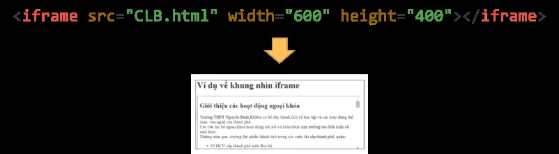Lưu ý: Các phần tử <iframe> thường dùng kết hợp với thẻ <a> để tạo liên kết và hiển thị nội dung bằng cách thêm thuộc tính target cho thẻ <a>.